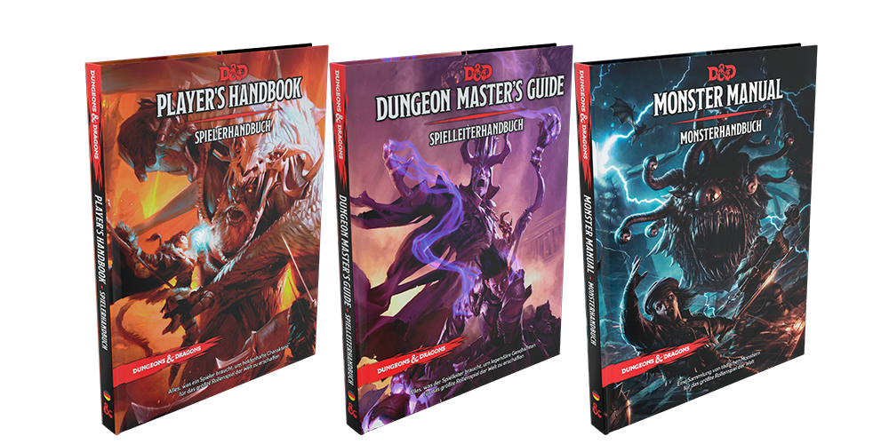

MATERIAL DE JUEGO
Fuente:¿Qué necesito para jugar a Dungeons & Dragons?
Si estás leyendo esto es porque tienes interés en sumergirte en los mundos de imaginación sin límites que dan los juegos de rol. Cuando los videojuegos, los juegos de tablero, el cine y otras ofertas lúdicas están circunscritas a mundos finitos, uno encuentra un puñado de dados en una tienda y se pregunta, ¿Qué necesito para jugar a Dungeons and Dragons?
-
Si nunca has jugado
Lo más probable es que empieces en una mesa de juego con algún Dungeon Master que ya tenga experiencia, por lo que no estarás solo en todo esto. Se te facilitará un Players Handbook (Manual del Jugador) para que construyas tu primer personaje (o se te dará ya hecho), unos dados y ya puedes empezar a jugar como uno más.
En este punto, si quieres tener tu propio material necesitarás un set de dados cualquiera (para no tener que robárselos al compañero de al lado cada vez que tires), el Players Handbook citado antes y un lápiz y goma. Sí, ir a borrar algo y no encontrar tu goma porque alguien te la ha cogido y no te la ha devuelto es muy molesto.
-
Para un jugador habitual
En el fondo lo único que necesitas es el ya citado Players Handbook (amén de los dados y lápiz/goma). Con él tienes bastante para horas y horas de diversión a chorro. Pero quizá, antes de dejarte llevar por el consumismo que lo ensucia todo (que ya llegaremos a ello) quieras algún libro más con el que ampliar tu biblioteca dungeonera.
Pero, bien sea por tener una montura, un familiar, o por la habilidad de tu personaje druida para adoptar forma salvaje, es más que posible que antes o después necesites conocer algunos monstruos, para lo cual te será de utilidad el Monster Manual. Además, si quieres pasar a ser Dungeon Master este es uno de los libros básicos que vas a necesitar sí o sí. Con todas las estadísticas de monstruos que puedes encontrar gratis en D&D Beyond y algunas más que solo se encuentran en el libro, el Manual de Monstruos es un básico de cualquier jugador de Dungeons & Dragons que se precie.
-
Nivel experto
Si ya eres nivel experto no necesitarás leer esto, pero si quieres convertirte en uno, lo primero que necesitas es comprar la Guía del Dungeon Master. Además de los objetos mágicos tan famosos en este tipo de juegos, este libro de ayudas solo para el master incluye consejos para la creación de mundos y reglas adicionales, como venenos, trampas, locura y personajes no jugadores, entre otras cosas.
Pero, ¿recuerdas cuando dije anteriormente que ya llegaría después el consumismo? Pues ya ha llegado.
-
Dados: Si llevas un tiempo jugando a esto ya habrás observado que existe cierto fetichismo alrededor de los dados. A todos nos gustan las cosas bonitas, y el mundo del poliedro tiene cosas verdaderamente espectaculares, dados de metal, de hueso, dados con otros dados dentro…
-
Hojas de personaje: El juego ya proporciona sus propias hojas de personaje, y hay herramientas gratuitas como Nivel 20 que permiten la gestión online de tus personajes, pero hay quien prefiere ir un poco más allá y comprar plantillas personalizadas, mucho más bonitas.
-
Mapas: Dungeons & Dragons se presta mucho a utilizar mapas, tanto mapas de reinos y regiones como mapas de mazmorras, ciudades y otras localizaciones. Algunos dungeon master crean sus propios mapas, mientras que otros compran auténticas obras de arte de la cartografía.
-
Miniaturas: Cuando los mapas del turno anterior son tiles, o plantillas de combate, el uso de miniaturas es obligado. Puedes reciclar miniaturas viejas que tengas de tu época de jugador de Warhammer, crear tus propias plantillas con una impresora o comprar figuras ad hoc que comercializa la propia compañía según la clase y raza de tu personaje.
-
Monedas, vasos y demás: No son necesarios para el juego, pero hay elementos que ayudan a meterse en la ambientación propia de un mundo de fantasía. Como en todo, hay precios para todos los gustos y para (casi) todos los bolsillos
-